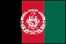
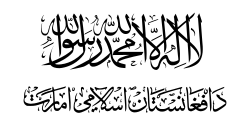
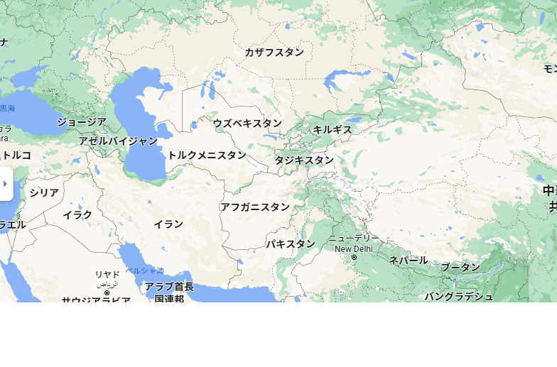

アフガニスタン・イスラム共和国
特記事項
2021年8月15日にターリバーンが行政を事実上掌握、8月19日にアフガニスタン・イスラム首長国の建国が宣言された。しかし国際連合の代表権はアフガニスタン・イスラム共和国政府が保持しており、またアフガニスタンの正統政府として承認した国家は存在しない。
1. 基礎データ
(1)一般情報
国旗
アフガニスタン共和国の国旗

タリバン政権の国旗

周辺地図

1) 漢字表記
阿富汗斯坦 / 亜富汗斯坦
2) 面積
652.225万㎢
3) 人口
3,890万人（2020年 世界人口白書）
4) 首都
カブール
5) 民族
パシュトゥン人、タジク人、ハザラ人、ウズベク人等
6) 言語
ダリー語、パシュトー語（公用語）
7) 宗教
イスラム教（主にスンニ派であるが、ハザラ人はシーア派）
(2)政治体制
1) 政体
2) 元首
3) 議会
4) 首相
(3)国防
1) 兵力
2) 予算
3) 国際組織
4) 補足
(4)経済
1) 主要産業
2) GDP
3) 一人当たりGDP
4) 経済成長率
5) 物価上昇率（前年同月比）
6) 失業率
7) 輸出額
8) 輸入額
380.81億ドル
9) 主要輸出相手国
10) 主要輸入相手国
11) 通貨
アフガニー
12) 為替レート
1$＝約79アフガニー（2021年5月時点）
(5)対日関係
1) 輸出総額
2) 輸入総額
3) 在留邦人数
4) 在日カザフスタン人数
出典：
外務省HP
2. 歴史
略年表
3. 地理
行政区分
州地図
No.
州章
州名
州都
面積
人口
人口密度
18
シムケント
1,163 km²
1,112,739 人
869.7 人/km²
各州の概要
アルマトイ州